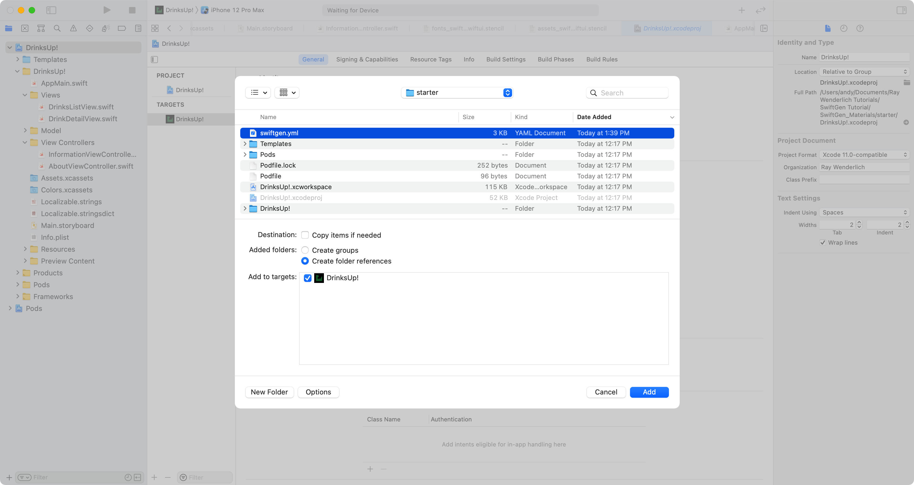

iOS的SwiftGen教程¶
作为一名移动开发者，你可能会觉得你每天都会遇到魔法。你写的几行代码被转化为全世界的人都能使用的应用程序。苹果公司提供的工具有助于使这种魔法变成现实，并使你的生活更容易。随着你在软件开发领域的深入，你可能会意识到有一个魔法你不喜欢：魔法字符串。
类型安全，即变量只能是特定类型的概念，为开发者提供了保护其程序安全的护栏。然而，魔法字符串将不安全的代码引入到这些应用程序中。什么是魔幻字符串？在iOS开发中，你已经遇到过很多次了。一个例子看起来像下面这样：
let color = UIColor(named: "green-apple")
self.title = "Welcome!"
这个例子显示"green-apple"和"Welcome!"在你的代码中直接写成字符串。说所有的开发者有时都会发现自己犯了这种做法，这并不夸张。
事实上，在iOS开发中，你并没有太多的选择。开箱即用，Xcode没有提供避免这种做法的方法。
那些在Android工作过的人可能会发现自己对这样的代码感到畏惧。Android开发环境有一种机制，可以将应用程序的资源，如字符串、颜色、图像和字体，转换为类型安全的变量。这样做有很多好处。它：
- 减少了拼写错误的风险。
- 防止不必要的资源重复。
- 在编译时提供资源检查。
- 在清理旧资源时提供帮助。
- 还有更多!
如前所述，iOS和macOS的开发者没有机会接触到一个能提供这种资源类型安全的开箱即用的系统。
幸运的是，有一个SwiftGen，这是一个代码生成器，可以在你的应用程序中摆脱魔法字符串。在GitHub上有一个开源库，你可以把它添加到你的iOS和macOS项目中，为你的所有资产带来类型安全和编译时检查。
在本教程中，你将学习如何：
- 用
SwiftGen设置你的项目。 - 定义你要转换的资产。
- 定义生成的代码的位置。
- 创建模板，让
SwiftGen生成的代码能够与SwiftUI的字体和颜色配合使用。
开始¶
要开始学习，请点击本教程顶部或底部的下载材料按钮。
你可以通过几种方式安装SwiftGen以配合你的环境。
- CocoaPods
- Homebrew
- Mint
- Directly download a zipped release
在本教程中，你将使用CocoaPods来管理SwiftGen。
Note
如果你没有CocoaPods，不用担心--启动项目和最终项目已经下载了该依赖项。 :]
打开工作区，命名为DrinksUp!.xcworkspace。因为这个项目使用CocoaPods，你将不能直接使用DrinksUp!.xcodeproj。
花点时间在Xcode中看看。该项目已经处于完成状态，但使用字符串来引用字体、颜色、图像和字符串。在本教程结束时，你将转换所有这些。
构建并运行，熟悉一下这个应用程序。

这款名为DrinksUp!的应用程序可以追踪你和你的家人在访问餐厅或在家时尝试过的有趣饮料。
设置SwiftGen¶
首先打开终端，导航到你的启动项目的根目录。接下来，在终端输入以下命令：
./Pods/SwiftGen/bin/swiftgen config init
这将在你的项目根部生成一个名为swiftgen.yml的配置文件。如果这个文件在Xcode中自动打开，继续并关闭它。
接下来，在你的项目工作区，进入File ▸ Add Files to "DrinksUp!" ...。找到swiftgen.yml。一定要取消勾选必要时复制项目，并选择创建文件夹引用。

点击添加按钮。完成后，你应该在项目导航器的顶部看到swiftgen.yml，如下所示：
Note
如果Xcode没有以同样的方式添加该文件，您可以移动该文件，使其位于所示的相同位置。
这个文件是你放置指示的地方，告诉SwiftGen你想把哪些文件转换为生成的代码。文件类型，YML，表示它使用YAML的语法。如果你以前没有使用过YAML，它只是一种更易读的方式来查看序列化数据。你可以把它看作是JSON，简化了。
现在，将swiftgen.yml的全部内容替换为以下内容：
# 1
input_dir: DrinksUp!/
# 2
output_dir: DrinksUp!/Generated/
以下是你添加的内容：
- 你声明了一个变量，
input_dir，即输入目录。这告诉SwiftGen，对于你即将添加的所有文件路径，根文件夹将被导航。 - 另一个变量定义了生成的
Swift文件的输出目录。通过这样做，你可以更容易地跟踪所有SwiftGen文件。
添加构建阶段¶
要运行SwiftGen，你需要向你的项目添加一个新的构建阶段。要做到这一点，在项目导航器中选择你的项目，选择构建阶段。选择+并选择新的运行脚本阶段。
通过双击当前名称Run Script，将该脚本重命名为SwiftGen。接下来，在脚本的文本字段内添加以下内容：
if [[ -f "${PODS_ROOT}/SwiftGen/bin/swiftgen" ]]; then
"${PODS_ROOT}/SwiftGen/bin/swiftgen"
else
echo "warning: SwiftGen is not installed. Run 'pod install --repo-update' to install it."
fi
最后，将脚本重新排序，使其位于脚本名称[CP] Check Pods Manifest.lock之后。你的Build Phases现在应该是下面这个样子：
建立并运行。如果一切设置正确，你不应该有任何错误。你的Generated文件夹里还没有任何东西。这就是下一步了。
转换XCAssets¶
现在，你已经准备好开始从你的项目中删除字符串了! 第一步将是让SwiftGen为项目中的XCAsset文件生成代码。打开swiftgen.yml，在文件末尾添加以下内容：
## XCAssets
# 1
xcassets:
# 2
inputs:
- Assets.xcassets
- Colors.xcassets
# 3
outputs:
# 4
templateName: swift5
# 5
output: XCAssets+Generated.swift
以下是每一句话的意思：
- 您想用
SwiftGen转换的每种文件类型或模板都需要在swiftgen.yml的根层有一个条目。在这里，这表明你想让SwiftGen转换属于XCAsset的文件。 - 这个列表表明
SwiftGen应将其转换限制在哪些文件上。 - 您需要告诉
SwiftGen如何生成输出。 - 你必须提供一个模板名称。这里，
swift5是SwiftGen团队提供的一个默认模板。你将在后面学习如何使用你自己的模板。 - 最后，你提供你想让你的新
Swift代码生成的文件名。记住，你在文件的顶部定义了output_dir，这意味着它将输出到Generated/XCAssets+Generated.swift。
构建并运行。如果你没有遇到任何错误，你的代码生成就成功了!
添加文件¶
展开项目导航器中的生成组。此刻，你仍然找不到你的新文件。要添加它，右击Generated，选择添加文件到"DrinksUp!"...。
选择XCAssets+Generated.swift。确保需要时复制项目不被选中，然后点击添加。现在，打开XCAssets+Generate.swift，看看周围。你会看到enum Asset。在enum中，你会发现进一步定义的枚举，与你定义的XCAsset目录相匹配。例如：
Assets：项目中包含的每张图片现在都有一个静态属性的定义。Colors：所有应用程序的颜色也有静态属性可供参考。
打开Assets.xcassets。注意有一组名为launch-assets的图片。但Assets在同一级别上声明了所有的静态图像属性。SwiftGen可以为您维护这一组织，但默认情况下不会这样做。打开swiftgen.yml，用以下内容替换整个xcassets条目：
## XCAssets
xcassets:
inputs:
- Assets.xcassets
- Colors.xcassets
outputs:
templateName: swift5
# 1
params:
# 2
forceProvidesNamespaces: true
# 3
forceFileNameEnum: true
output: XCAssets+Generated.swift
在这里，你可以利用SwiftGen的能力，通过以下方式定制你的代码输出：
- 在你的
outputs节点上定义params。 forceProvidesNamespaces。这将维护你在资产目录中发现的命名空间。- 这个额外的参数确保无论你在
inputs中提供多少文件名，SwiftGen都将保持单独的枚举来代表每个资产目录。
构建项目，然后回到XCAssets+Generated.swift。你会看到Assets现在包含一个新的enum，名为LaunchAssets以代表你的文件夹结构。
现在，是时候使用这个新生成的代码来删除对图片的任何字符串引用。打开DrinksListView.swift。你会看到Image("milkshake")在视图上添加的工具条项目内。用以下内容替换这一行：
Image(Asset.Assets.milkshake.name)
在这里，你引用了milkshake的图像名称。截至目前，SwiftGen不支持直接与SwiftUI一起工作。你以后会学习如何自己添加这个。现在，你仍然可以使用开箱即用的方法来加载图像资产，而不必直接引用字符串。
使用额外的基本模板¶
有一些额外的模板你可以利用，不需要任何定制。
使用界面生成器工作¶
你正在使用的应用程序使用的是SwiftUI。不过，为了展示SwiftGen使用Interface Builder的能力，该示例项目包括一个故事板和一些视图控制器。首先，通过向swiftgen.yml添加以下内容，生成支持Interface Builder或Storyboards的代码：
## Interface Builder
ib:
inputs:
# 1
- .
outputs:
# 2
- templateName: scenes-swift5
output: IB-Scenes+Generated.swift
# 3
- templateName: segues-swift5
output: IB-Segues+Generated.swift
在这里，你已经做了以下工作：
- 向
SwiftGen指出，您希望它在您的项目根目录中寻找任何界面构建器支持的文件。 SwiftGen的一个伟大之处在于，它将场景的概念与场景的概念分开。这表明你的场景将输出到哪个文件。- 最后，这表明所有的
segue信息都应该输出到哪里。
建立你的项目。将IB-Scenes+Generate.swift和IB-Segues+Generated.swift添加到Generated组，就像你对XCAssets+Generated.swift所做的那样。
现在，你可以替换应用程序中的场景或segue信息。
首先打开InformationViewController.swift。在InformationViewController中，将showAbout()的实现替换为以下内容：
performSegue(
withIdentifier: StoryboardSegue.Main.showAbout.rawValue,
sender: self)
所有的segue将生成实际的enum案例，这使你在检查哪个segue触发时更容易。为了简单起见，你添加的代码只是触发了segue。
接下来，在InformationView中，用下面的代码替换makeUIViewController(context:)：
func makeUIViewController(context: Context) -> some UIViewController {
StoryboardScene.Main.initialScene.instantiate()
}
在这里，你已经简化了实例化一个故事板的初始视图控制器所需的代码。SwiftGen提供了一个辅助方法来快速访问你的初始场景。
构建并运行。点击右上方的学习更多。你会看到一个模版出现，向你展示一些关于这个应用程序的信息。这是在调用makeUIViewController(context:)以了解要加载哪个视图。
现在，点击"关于"按钮。你会触发你所修改的转场。
使用JSON工作¶
你要添加的最后一个快速赢家是对JSON的支持。在swiftgen.yml的末尾添加以下内容：
## JSON
json:
inputs:
- Resources/
outputs:
templateName: runtime-swift5
output: JSON+Generated.swift
现在这提供了一种方法来引用你在项目资源中的任何JSON文件。你将用它来转换与应用程序捆绑的模拟数据。
构建项目，然后将JSON+Generated.swift添加到你的Generated组。
现在，打开Drink.swift。完全删除名为MockData的struct。然后，将底部的DrinkStore的扩展名替换为以下内容：
extension DrinkStore {
static var mockData: [Drink] {
do {
let data = try JSONSerialization.data(
withJSONObject: JSONFiles.starterDrinks,
options: [])
let mockDrinks = try JSONDecoder().decode([Drink].self, from: data)
return mockDrinks
} catch {
print(error.localizedDescription)
return []
}
}
}
在这里，你应该注意到你的代码引用了JSONFiles.starterDrinks。打开MockData.json，注意文件中的第一个键，名为starterDrinks。SwiftGen将这个顶级对象作为JSONFiles的一个静态属性，供你在需要时引用。
构建并运行。你不应该注意到与以前有什么不同--只是饮料在列表中显示出来。

使用字符串工作¶
也许SwiftGen提供的最大便利之一就是能够使用变量来引用本地化字符串。将任何你要展示给你的应用程序用户的文本放在本地化的strings或stringsdict文件中，是一个很好的做法。但是，如果你已经这样做了，你就会知道，一旦你超过了少数几个字符串，你就很难记住哪些字符串是可用的。而且，你在strings文件里有一个字符串，而在你的代码里有...一个字符串，这感觉也是多余的。
这个项目包含以下字符串文件：
Localizable.strings：你普通的字符串文件，由键和值组成。Localizable.stringsdict：只要你需要担心复数的字符串，你就应该使用stringsdict文件。这种文件类型不仅支持翻译字符串，而且还支持如何为一种语言所需的任何变化进行单词复数。
要转换你所有的字符串文件，请在swiftgen.yml中添加以下内容：
## Strings
strings:
inputs:
# 1
- en.lproj
outputs:
- templateName: structured-swift5
# 2
params:
publicAccess: true
output: Strings+Generated.swift
关于你在这里添加的内容，你应该知道几件重要的事情：
- 当你转换你的字符串文件时，你应该只使用其中一个本地化的目录。每添加一种语言，就会有一个新的本地化目录被创建。在这个项目中，唯一的本地化是英语。如果你添加了更多的语言，就不需要修改这个条目来接收这些额外的翻译。因为字符串文件应该有一组匹配的键和值，你会像不使用
SwiftGen时那样引用翻译。 - 你添加了一个新参数，名为
publicAccess。如果你看一下你添加的任何一个生成的文件，你会注意到所有的类型都有internal的访问修改器。通过使用这个参数，你可以将生成的枚举的访问修饰符改为公共的。
构建项目，然后将Strings+Generated.swift添加到Generated组中。在你转换应用程序中的所有字符串之前，有必要了解这个文件的一些不同之处。
了解该文件
打开Strings+Generated.swift。你应该看到创建的父类型，名为L10n。在这个enum中，你会看到在它里面生成了几个子类型：DrinkDetail, Navigation和DrinkList。这些与Localizable.strings中声明的字符串对应。
打开Localizable.strings，看看它是如何声明第一个条目的：
"DrinkList.Navigation.Title" = "Drinks";
注意到键是如何使用点命名空间符号来声明的：
DrinkList：这表明这个字符串属于饮料列表屏幕。Navigation：表示这个字符串要在导航栏中使用。Title：最后，这表示它是导航栏中的标题。
现在，你可以选择以不同的方式组织和命名你的字符串。这没有什么问题--这种命名方式是用来显示SwiftGen将如何转换和组织你的代码。对于你在字符串中放置的每个句点，SwiftGen都会生成一个额外的子类型。
回到Strings+Generated.swift中，你会看到静态函数drinksCount。SwiftGen使处理复数字符串变得容易。这些生成的函数使我们不必创建对本地化字符串的引用并使用字符串格式化器，而是轻松地使用一个函数来获取你的复数化字符串的值。
现在，将应用程序中使用的所有本地化字符串转换为指向生成的类型。首先打开DrinksListView.swift。接下来，找到这行代码：
Text("DrinkList.Navigation.Title")
将此改为：
Text(L10n.DrinkList.Navigation.title)
等一下...什么是L10n？这是localization的一个快捷方式。你可能也见过internationalization的缩写为i18n。如果你计算这两个词中第一个字母和最后一个"n"之间的字母，你会发现分别有10个或18个字母。虽然这很有道理，但如果为你的顶级字符串类型使用一个不同的名字，不是很好吗？
打开swiftgen.yml，给你的字符串条目添加一个属性，就在publicAccess之后，所以它看起来像这样：
strings:
inputs:
- en.lproj
outputs:
- templateName: structured-swift5
params:
publicAccess: true
enumName: Strings
output: Strings+Generated.swift
这里，你添加了参数enumName。这让你把类型从"L10n"改为"Strings"。
建立并运行。这一次，你应该有一个编译错误。这是因为L10n类型不再可用。转到DrinksListView.swift，找到：
Text(L10n.DrinkList.Navigation.title)
现在，把它换成：
Text(Strings.DrinkList.Navigation.title)
现在，你的应用程序正在使用你在上一步提供的新类型名称。
构建你的应用程序。你应该不再有任何编译错误了。
Note
如果你仍然有错误，你可能需要清理你的项目。选择Product ▸ Clean Build Folder，然后再次构建。
接下来找到属性drinkCountString。这是使用stringsdict文件来处理如何显示列表中饮料数量的代码。用下面的内容替换它。
private var drinkCountString: String {
Strings.drinksCount(drinkStore.drinks.count)
}
如果你把它与之前的代码相比较，你可以看到这是一种更快捷的引用复数字符串的方法。
你应该将项目中的所有字符串转换为不使用字符串。打开Localizable.strings，看看所有的字符串键。你应该在Swift文件中找到这些键的每一种用法，并将其换成SwiftGen生成的变量。
当你要交换DrinkDetailView.swift中发现的评分文本时，它将使用一个函数来提供字符串，就像你处理饮料数量的方式一样。
创建自定义模板¶
到此为止，你的swiftgen.yml文件一直使用SwiftGen提供的默认模板。所有这些都存储在SwiftGen pod中。如果这些模板不能完全提供您想要的功能，您可以创建自己的模板，以便按照您的意愿生成代码。模板是用Stencil建立的，这是一个开源项目，为Swift提供了一种模板语言。在本节中，你将学习如何修改现有的模板并使用它们来生成你的代码。
如果你看一下项目导航器，你会发现有一个名为Templates的文件夹。在这个文件夹中，有两个子文件夹。fonts和xcassets。有了这些，你就可以让SwiftGen提供支持，直接在SwiftUI中使用颜色和字体。
支持SwiftUI颜色¶
要添加SwiftUI的Color支持，请打开assets_swift5_swiftui.stencil。一开始事情可能有点难办，因为该文件没有任何代码语法支持。
在第13行，添加以下一行代码：
import SwiftUI
接下来，回到swiftgen.yml。在你的第一个条目中，对于xcassets，找到你定义模板名称的那一行：
templateName: swift5
现在，将其替换为以下内容：
templatePath: Templates/xcassets/assets_swift5_swiftui.stencil
在这里，你已经从使用templateName改为templatePath。这告诉SwiftGen使用你的自定义模板而不是内置模板。
构建项目，然后转到XCAssets+Generated.swift。在顶部，你现在会看到：
import SwiftUI
因为你在Stencil文件中添加了导入，当代码生成时，它接收了这个变化并添加了新的导入。很酷，对吗？
打开assets_swift5_swiftui.stencil并替换：
// Add Support For SwiftUI Here
具有以下特点：
{{accessModifier}} private(set) lazy var color: Color = {
Color(systemColor)
}()
在这段代码中，你可以看到如何更多地使用Stencil。下面是你添加的内容：
{{accessModifier}}。这是你告诉Stencil如何用代码生成时提供的东西进行替换。如果你看这个文件的第11行，你看到accessModifier被定义为一个变量。默认情况下，访问修改器是internal。如果你还记得，你看到了如何将其改为public。- 剩下的部分实际上只是标准代码。它从
UIKit颜色中创建一个SwiftUI颜色。
Note
作为启动材料的一部分，对模板还做了一个修改。它将Color类型改为SystemColor。
再次建立该项目，然后回到XCAssets+Generated.swift。在第62行，你应该看到你的模板中的代码，现在已经生成了真正的代码。
现在，你需要把任何对颜色的硬编码引用换掉，以使用你的新功能。打开DrinksListView.swift，找到在导航标题文本上设置前景色的地方。用下面的代码替换它：
Text(Strings.DrinkList.Navigation.title)
.font(Font.custom("NotoSans-Bold", size: 17, relativeTo: .body))
.foregroundColor(Asset.Colors.textColor.color)
在这里，你已经摆脱了使用硬编码的字符串，真正的SwiftUI支持直接引用一个颜色。
你也可以在UIKit中直接使用颜色。打开AppMain.swift。改变下面这行代码：
appearance.backgroundColor = UIColor(named: "header")
要这样：
appearance.backgroundColor = Asset.Colors.header.systemColor
这里，systemColor是对平台特定颜色类型的引用。如果你在iOS上，它就是UIColor，如果你在macOS上，就是NSColor。
有两个文件使用字符串声明了颜色：
AppMain.swiftDrinksListView.swift
按照上面的例子，在这些文件中完成对其余颜色的转换，即使用字符串。
支持SwiftUI字体¶
就像SwiftUI的Color目前在SwiftGen中不被支持一样，Font也不例外。首先打开fonts_swift5_swiftui.stencil，在文件顶部添加以下导入：
import SwiftUI
接下来，替换文件末尾附近的这段代码：
// Add Support For SwiftUI here
fileprivate extension Font {
}
具有以下特点：
fileprivate extension Font {
// 1
static func mappedFont(_ name: String, textStyle: TextStyle) -> Font {
let fontStyle = mapToUIFontTextStyle(textStyle)
let fontSize = UIFont.preferredFont(forTextStyle: fontStyle).pointSize
return Font.custom(name, size: fontSize, relativeTo: textStyle)
}
// 2
static func mapToUIFontTextStyle(
_ textStyle: SwiftUI.Font.TextStyle
) -> UIFont.TextStyle {
switch textStyle {
case .largeTitle:
return .largeTitle
case .title:
return .title1
case .title2:
return .title2
case .title3:
return .title3
case .headline:
return .headline
case .subheadline:
return .subheadline
case .callout:
return .callout
case .body:
return .body
case .caption:
return .caption1
case .caption2:
return .caption2
case .footnote:
return .footnote
@unknown default:
fatalError("Missing a TextStyle mapping")
}
}
}
以下是你添加的内容：
mappedFont(_:textStyle:)从名称和TextStyle创建一个自定义字体。样式是用来获得每个字体的标准、默认的字体大小。mapToUIFontTextStyle(_:)简单地提供了一个SwiftUI TextStyle到UIKit TextStyle的1:1映射。
接下来，在文件的中间找到这个注释：
// Add Support For SwiftUI Here
用以下内容代替：
{{accessModifier}} func textStyle(_ textStyle: Font.TextStyle) -> Font {
Font.mappedFont(name, textStyle: textStyle)
}
这段代码类似于你为提供Color支持所添加的代码。这里唯一的区别是，它专门用于在SwiftUI中直接提供字体。
现在，打开swiftgen.yml，添加以下条目：
## Fonts
fonts:
inputs:
- Resources/Noto_Sans
outputs:
templatePath: Templates/fonts/fonts_swift5_swiftui.stencil
output: Fonts+Generated.swift
这个应用程序使用两种字体，都位于Resources组中：
NotoSansNotoSans-Bold
这个新条目只需要知道你想支持的字体的父文件夹在哪里。其他一切都与你之前添加的所有其他条目类似。
建立你的应用程序并将Fonts+Generated.swift添加到Generated。一旦你这样做，打开Fonts+Generated.swift。在这里，你可以看到字体家族是如何被组织的。你应该看到NotoSans有以下变化可供选择：
RegularBoldBoldItalicItalic
就像应用程序中所有其他生成的代码一样，它相当容易使用。打开AppMain.swift，把application(_:didFinishLaunchingWithOptions:)的第一行替换为以下内容：
let buttonFont = FontFamily.NotoSans.bold.font(size: 16)
在这里，你直接将字体大小设置为粗体的NotoSans字体。
接下来，进入DrinksListView.swift，在NavigationLink中找到对字体的第一个引用，并将其替换为以下内容：
Text(drinkStore.drinks[index].name)
.font(FontFamily.NotoSans.bold.textStyle(.body))
在这里，你可以利用你的定制模板的代码，生成一个自定义的SwiftUI字体，大小与默认的TextStyle相匹配：在这里是body。
最后，完成对整个应用程序中所有字体的使用的转换。在DrinksListView.swift和DrinkDetailView.swift中，你会发现有几个地方设置了字体。按照上面的例子，你可以将代码从使用字符串转换为适当重量的NotoSans。每个地方都已经指明了它们应该有哪种TextStyle。
建立并运行。你的应用程序应该仍然与你开始时的样子相同。但你现在应该以类型安全的方式引用所有的资源了
接下来去哪？¶
你可以点击本教程顶部或底部的下载材料按钮，下载项目的完成版。
你现在可以使用SwiftGen来：
- 无论你使用
SwiftUI还是UIKit，都不需要在整个应用程序中使用字符串来引用资源。 - 使用内置参数自定义输出文件。
- 使用你自己的模板来生成代码。
要了解更多信息，请在GitHub上查看SwiftGen。你也可以在GitHub上了解更多关于Stencil的信息。
我们希望你喜欢这个教程。如果你有任何问题或意见，请加入下面的论坛讨论!